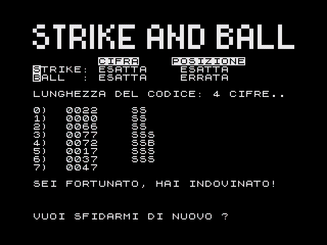

risorse | zx spectrum | strikenball
È il classico gioco del mastermind con le cifre a sostituire i colori.
Nota: una veloce scorsa al listato evidenzia l'assenza di una chiamata RANDOMIZE che eviterebbe che il programma proponga, ad ogni avvio, sempre la stessa sequenza di codici.

Scarica il nastro virtuale strikenball.tzx (3KB).
10 REM *********************
20 REM * *
30 REM * STRIKE AND BALL *
40 REM * *
50 REM *********************
60 REM
70 GO TO 460
80 REM
90 REM =====================
100 REM GENERA COMBINAZIONE
110 REM =====================
120 REM
130 LET I$=""
140 FOR F=1 TO LUNG
150 LET NUM=INT (RND*10)
160 LET I$=I$+STR$ (NUM)
170 NEXT F
180 RETURN
190 REM
200 REM ====================
210 REM PROVA A INDOVINARE
220 REM ====================
230 REM
240 INPUT "COMBINAZIONE..";LINE T$: IF LEN T$<>LUNG THEN PRINT #0; INVERSE 1;"* LUNGHEZZA ERRATA *": PAUSE 50: GO TO 240
250 RETURN
260 REM
270 REM ===========
280 REM CONTROLLO
290 REM ===========
300 REM
310 LET C$=I$
320 LET STRIKE=0: LET BALL=0
330 FOR F=1 TO LUNG
340 IF C$(F)<>"*" AND T$(F)<>"*" AND C$(F)=T$(F) THEN LET STRIKE=STRIKE+1: LET C$(F)="*": LET T$(F)="*"
350 NEXT F
360 FOR F=1 TO LUNG
370 FOR N=1 TO LUNG
380 IF C$(F)<>"*" AND T$(N)<>"*" AND C$(F)=T$(N) THEN LET BALL=BALL+1: LET C$(F)="*": LET T$(N)="*"
390 NEXT N: NEXT F
400 RETURN
410 REM
420 REM ===============
430 REM PRESENTAZIONE
440 REM ===============
450 REM
460 BORDER 0: PAPER 0: INK 7: BRIGHT 1: CLS : POKE 23624,71
470 PRINT "{+6}{-2}{-1}{+4}{-5}{-3}{+7}{+5}{+5}{+6}{-5}{-3}{-2} {+6}{-6}{-5}{-8}{+5}{+4}{-6} {-5}{-3}{+7}{+6}{-6}{-5}{-8}{-8}{+5} "
480 PRINT "{-1}{-6}{-8}{+5}{-5}{+3}{-2}{+5}{+4}{+7}{-5}{+3}{-8}{-8}{+1}{+2}{-5}{-6}{+5}{+5}{-5}{-8}{-5}{-3}{+7}{+1}{+2}{-5}{-8}{-8}{+5}{-8}"
490 PRINT "{-6}{+6}{-8}{+5}{-5}{-8}{+5}{+5}{+5}{-5}{-5}{+3}{+7} {+5}{-5}{-5}{-8}{+5}{+1}{+6} {-5}{+3}{-2}{+5}{-5}{-5}{+3}{+7}{+1}{+3}"
500 PRINT '" "; INVERSE 1;"CIFRA"; INVERSE 0;" "; INVERSE 1;"POSIZIONE"'"S"; INVERSE 0;"TRIKE: ESATTA ESATTA"' INVERSE 1;"B"; INVERSE 0;"ALL : ESATTA ERRATA"
510 INPUT "LUNGHEZZA CODICE [3..9]:";LUNG
520 IF LUNG<3 OR LUNG>9 THEN GO TO 510
530 PRINT '"LUNGHEZZA DEL CODICE: ";LUNG;" CIFRE.."
540 GO SUB 100
550 FOR T=0 TO 9
560 PRINT
570 PRINT T;") ";
580 GO SUB 210
590 PRINT T$;" ";
600 GO SUB 280
610 IF STRIKE=LUNG THEN GO TO 760
620 IF STRIKE=0 THEN GO TO 660
630 FOR F=1 TO STRIKE
640 PRINT "S";
650 NEXT F
660 IF BALL=0 THEN NEXT T
670 FOR F=1 TO BALL
680 PRINT "B";
690 NEXT F
700 NEXT T
710 PRINT '"NON CE L'HAI FATTA!!"'"IL CODICE ERA -->"; INVERSE 1;I$; INVERSE 0;"<--"
720 PRINT #0;"VUOI RITENTARE ?"
730 LET R$=INKEY$: IF R$="" THEN GO TO 730
740 IF R$="N" OR R$="n" THEN CLS : STOP
750 IF R$="S" OR R$="s" THEN GO TO 460
760 PRINT ''"SEI FORTUNATO, HAI INDOVINATO!"
770 PRINT #0;"VUOI SFIDARMI DI NUOVO ?": GO TO 730
Pagina modificata l'8/11/2011